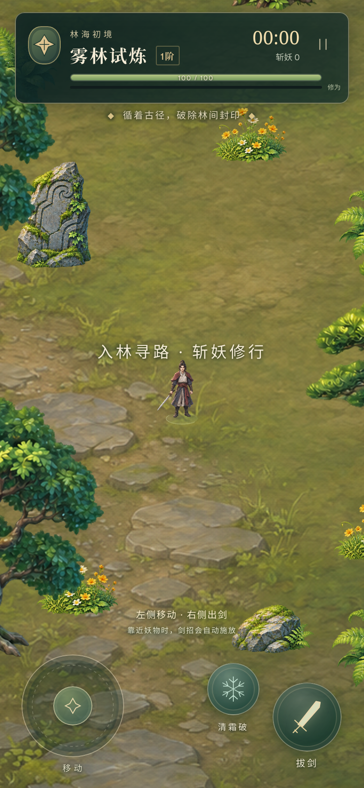
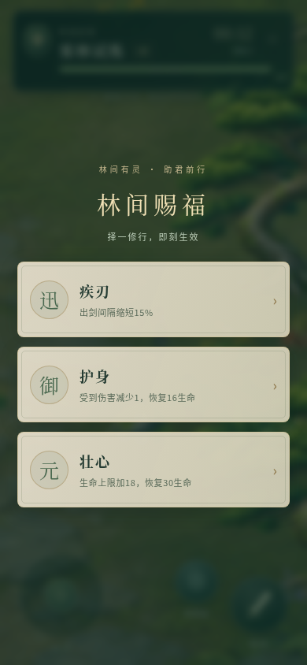
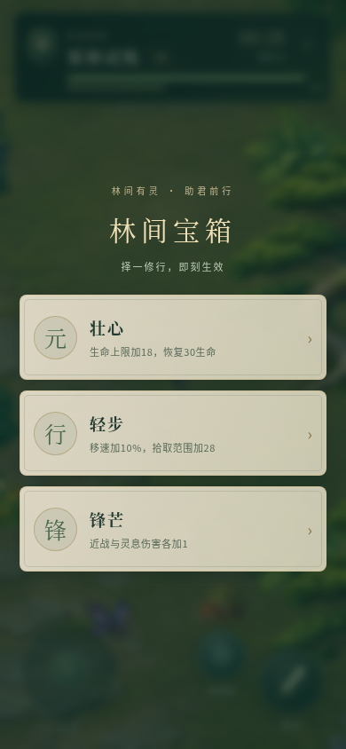
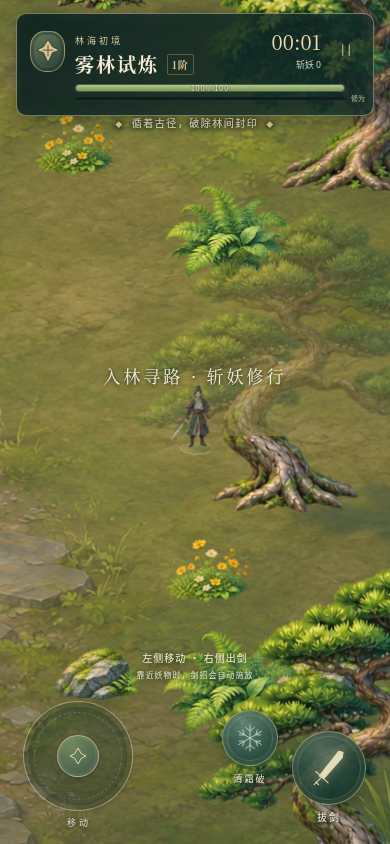
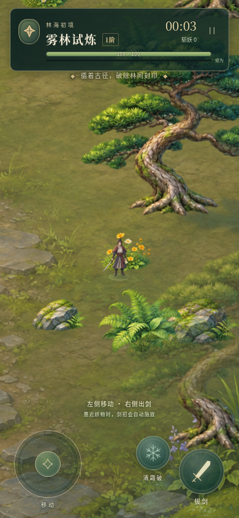

森林样关 · F.1雾林试炼
原创分层手绘森林、持剑男主、三类妖物与古木灵鹿。走位、出剑、范围技能、三选一、宝箱与首领结算。
连续原速实玩
22秒连续实玩：走位、普通剑招、经验和升级选卡。约16秒连续首领战与结算，未变速。
录像环境：云Linux Chromium CPU Canvas2D，390×844、DPR1原生触屏模拟；实测活跃渲染59.822FPS。视频编码25FPS，不是iPhone/微信真机，没有系统音轨。另有WebKit DPR2兼容记录，详见测试说明。
正常手机画面

390×844、DPR2首屏。按手机尺寸直接绘制。
实际经验升级，触屏选择即刻生效。
拾取林间宝箱后的额外成长选择。树冠前后关系

实际走入近冠下，局部冠层渐隐；下干与树根保持。
走出后冠层恢复，人物与树根有前后关系。遮挡数据 · 实际资源SHA · 录像信息 · 素材来源与范围
F.1为独立原创样关，未复制RO Survivors代码或资产，未发布私人参考视频。凤鸣H36及Cinderwatch试玩仍保留。